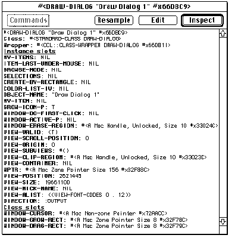
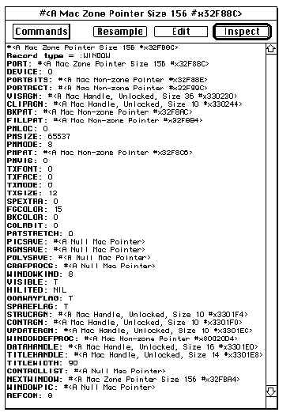
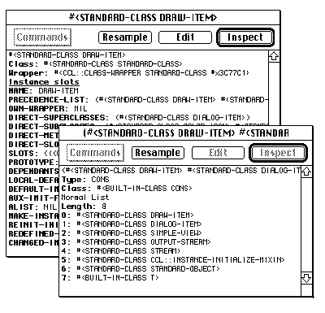
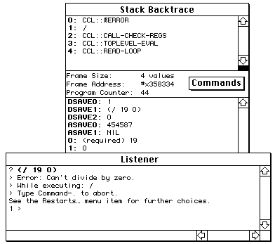
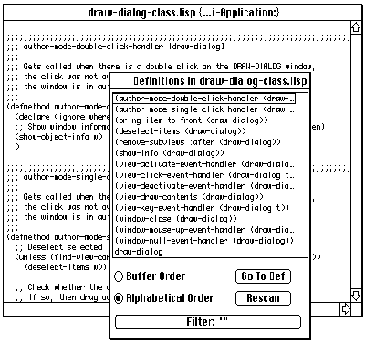

Macintosh Common Lisp (MCL) is a powerful implementation of the Lisp language as
well as a dynamic development environment. This article describes major aspects of
the MCL language and environment. It provides essential information for non-Lisp
programmers who are unaware of the power of this language or of the MCL
development environment, as well as for Lisp programmers who are unaware of MCL
features or performance.
As the price of memory plummets and powerful computers become as cheap as sand,
developers are beginning to look afresh at the positive aspects of dynamic
programming environments, like Lisp and Smalltalk, that once seemed too slow and
memory-hungry. These environments offer the proven ability to generate and run
large-scale applications, easily access the toolbox, and call MPW C, Pascal, or
Assembler programs. With comprehensive and elegant class libraries for defining
user interfaces, these environments promise to significantly improve programmer
productivity over traditional languages.
Many Lisp environments are available for the Macintosh. We'll focus here on what one
particular dynamic programming environment, Apple's own Macintosh Common Lisp
(MCL), has to offer. We'll compare it to the programming environment provided by
MPW in conjunction with MacApp, Apple's object-oriented application framework
based on Pascal. We'll take a close look at its key advantages, and will illustrate them
with fragments from a sample program. The entire sample program plus a
step-by-step description of its development can be found on the Developer Essentials
disc that accompanies this issue.
MCL is a powerful implementation of the Lisp language. (If you 're new to Lisp, take a
look at the sidebar "A Mini Lisp Tutorial" for a quick overview of how it differs from
Pascal.) MCL provides full compatibility with the Common Lisp standard, an extensive
object-oriented system, and a rapid prototyping development environment.
MCL 2.0 supports Common Lisp and the Common Lisp Object System (CLOS). This
extension of the Common Lisp standard offers an object-oriented programming
paradigm for Lisp, within which MCL implements a class library for developing user
interfaces. The MCL environment includes a syntax-oriented text editor for Lisp; a
direct way to navigate through sources; a tracer, stepper, and backtracer; and the
ability to disassemble code just in case you want to shave off a microsecond.
The key advantages of MCL are its interactivity, the inherent power of symbolic
processing in Lisp, the overall consistency of its object library, and its abstraction
away from the Macintosh event-loop style of programming. We'll take a closer look at
these advantages as we compare MCL with MacApp/MPW.
MCL and MacApp/MPW are both object-oriented programming environments available
from Apple. We'll compare four different aspects of these environments:
LANGUAGE BASES
MacApp is based on ObjectPascal, a set of object-oriented extensions to Pascal
somewhat on a par with the C++ extensions to C. MCL is based on the Common Lisp
standard (ANSI X3J13 Committee), which includes the Common Lisp Object System
(CLOS), an object-oriented extension to Lisp. Table 1 gives an overview of what these
languages offer.
The most striking differences in the languages are (1) their syntax (described in the
sidebar "A Mini Lisp Tutorial"), (2) the ability of Common Lisp to deal with typeless
variables, and (3) Common Lisp's automatic garbage collection. Let's turn our
attention to the latter two differences.
Table 1 Features of ObjectPascal Versus Common Lisp
| Feature | ObjectPascal | Common Lisp |
| Instance variables | Yes | Yes |
| Class variables | No | Yes |
| Multiple inheritance | No | Yes |
| Inheritance types | One | One standard, |
| user-redefinable | ||
| Method combination | Not applicable | Yes |
| Before/after methods | No | Yes |
| Methods on instances | No | Yes |
| Method discrimination | On single argument | On all arguments |
| Toolbox interface | Yes | Yes |
| Variable typing | Required | Optional |
| Garbage collection | Manual | Automatic |
| Foreign language interface | Yes (MPW object files) | Yes (MPW object files) |
| Error handling | Yes | Yes |
In Lisp, you need not declare a variable's type. You can assign to a Lisp variable any
type of object, or many types of objects at different times, within a lexical scope. The
type information is associated with the data objects themselves rather than with the
variables. However, declaration statements are available for optimal compilation. A
common practice is not to type variables until the program is thoroughly debugged,
and then to use typing only in the most crucial parts of the code. For better
performance, you can require the run-time system to forego type checking.
Common Lisp does automatic garbage collection of inaccessible values (for example,
objects, strings, arrays)--that is, values that are implicitly deallocated. A key
advantage of this is simplification of your code. For example, the following statement
allocates an instance of the classWindow and binds it to the variablemyWindow:
(setq myWindow (make-instance 'Window))
If thereafter you set myWindow to a different value, say,
(setq myWindow (make-instance 'Dialog))
Common Lisp will free up the space occupied by the Window instance (unless, of
course, you've bound it to a different variable or the window is still open). Much of the
power of Lisp derives from the ability to implicitly allocate and deallocate,as well as
to easily access, simple data structures like lists, or complex objects. In contrast,
MacApp requires explicit method calls to allocate, initialize, and deallocate objects. In
both cases, you must explicitly dispose of space that you've allocated from the
Macintosh heap via Memory Manager calls. However, Common Lisp allocates space for
its own objects and other data structures in its own heap area managed by the garbage
collector.
We can compare the key features of ObjectPascal and Common Lisp object systems by
inspecting the code needed to define two classes of objects, Beeper and LongBeeper.
These classes have a BeepMe method that causes them to beep a number of times
specified by an instance variable.LongBeeper inherits from Beeper. Beeper makes
three short beeps, and LongBeepermakes four long beeps followed by the number of
short beeps Beeper makes. In the ObjectPascal code, we abrogate specifications
otherwise required by the ObjectPascal compiler that don't concern us.
Here's the ObjectPascal code:
TYPE
TBeeper = OBJECT
fBeeps: integer;
PROCEDURE TBeeper.IBeeper;
PROCEDURE TBeeper.BeepMe;
END;
TLongBeeper = OBJECT(TBeeper)
fLongBeeps: integer;
PROCEDURE TLongBeeper.IBeeper;
PROCEDURE TLongBeeper.BeepMe;
END;
PROCEDURE TBeeper.IBeeper;
BEGIN
SELF.fBeeps := 3;
END;
PROCEDURE TLongBeeper.IBeeper;
BEGIN
INHERITED IBeeper;
SELF.fLongBeeps := 4;
END;
PROCEDURE TBeeper.BeepMe;
VAR Count: integer;
BEGIN
For Count := 1 to SELF.fBeeps do
SysBeep(30);
END;
PROCEDURE TLongBeeper.BeepMe;
VAR Count: integer;
BEGIN
For Count := 1 to SELF.fLongBeeps do
SysBeep(120);
INHERITED BeepMe;
END;
{A function that uses the LongBeeper class}
FUNCTION UseBeeper;
VAR myBeeper: TLongBeeper;
BEGIN
NEW(myBeeper);
FailNil(myBeeper);
myBeeper.ILongBeeper;
myBeeper.BeepMe;
UseBeeper := myBeeper;
END;
The same sequence in Common Lisp looks like this:
(defclass Beeper ()
((Beeps :initform 3)))
(defclass LongBeeper (Beeper)
((LongBeeps :initform 4)))
(defmethod BeepMe ((me Beeper))
(dotimes (count (slot-value me 'Beeps))
(_SysBeep :word 30)))
(defmethod BeepMe ((me LongBeeper))
(dotimes (count (slot-value me 'LongBeeps))
(_SysBeep :word 120))
(call-next-method))
;;; A function that uses the LongBeeper
(defun UseBeeper ()
(let ((myBeeper (make-instance 'LongBeeper)))
(BeepMe myBeeper)
myBeeper))
Although Common Lisp object system may at first sight seem to have more features
than any particular programmer would need, in fact these capabilities are normally
used by Lisp programmers.
Multiple inheritance is an instructive example. If you are trying to define classes with
complementary behavior, multiple inheritance is the most elegant and economical
solution. For example, you can define two classes called ReadStream and
WriteStream that support read-only and write-only behavior for streams,
respectively. This gives you the option of basing a class of read-write streams on
inheritance from these classes:
(defclass ioStream (ReadStream WriteStream) ())
Since ReadStream and WriteStream are independent, you can also define a class of
windows that act like write-only streams by inheriting from both the Window and
WriteStream classes:
(defclass StreamWindow (Window WriteStream) ())
Using single inheritance to define ioStream and Window would result in redundant
and unmodular code--one of the problems object-oriented programming tries to solve.
As you use multiple inheritance more seriously, however, you may have to deal with
cases where you inherit multiple definitions of the same method. From the viewpoint
of your class's semantics, you will probably want to do one of the following: (1)
inherit all or some of the methods in any order or in a specific order, or (2) inherit
none of the methods. Common Lisp allows you to deal with any of these possibilities.
For example, to avoid inheriting a method, you simply redefine the method for the
class you are defining without making a call tocall-next-method. The latter is a
generalization of ObjectPascal's INHERITED (compare above the BeepMe methods for
the LongBeeper class in ObjectPascal and Common Lisp). Method combination is a
feature that enables you to specify the order in which methods of a given name will be
invoked.
"Before" and "after" methods enable you to specify behavior that should execute just
before or after your method is invoked. This provides you with flexibility in method
combination in subtle cases because the before and after methods are not embedded in
the code of the primary method. But more interesting is the manner in which Common
Lisp methods are dispatched. Whereas most object- oriented systems dispatch on the
class of the first argument, Common Lisp bases the method dispatch on the class of each
argument passed to a method call. One example of a case in which you may want to
dispatch on two arguments is when you have a Print method that can print on a
variety of media. If you have a class Document that you want to be able to print into
aColorLaser stream or into an ImageWriter stream, you can define Print as
follows:
(defmethod Print ((thingToPrint Document) (stream ColorLaser))
;; Code to print to a ColorLaser goes here
)
(defmethod Print ((thingToPrint Document) (stream ImageWriter))
;; Code to print to an ImageWriter goes here
)
This generalizes object-oriented programming's idea that you shouldn't have to
special-case your methods: the appropriate method will be called by the system on the
basis of the type of all passed arguments. In particular, if the second argument
(stream) is a ColorLaser, then the first method above will be called; if the stream is
an ImageWriter, then the second method will be called. The alternative would be to
check what kind of stream you are writing to within a monolithic Print method.
CLASS LIBRARIES AND EVENT SYSTEMS
Class libraries, which are provided with the language (some third parties sell
alternative libraries or extensions), impose a model of how Macintosh events are
handled, what kinds of Macintosh components (such as menus, dialog boxes) are
available, and how these interact.
Both MacApp and MCL offer a set of classes to easily instantiate menu bars, menus,
menu items, pull-down and pop-up menus, windows, dialogs, buttons, check boxes,
static and editable text, lists, and spreadsheet tables. MacApp features extensive
printer (via the TPrintHandler class) and undo (via the TCommand class) support.
MCL features easy installation and handling of view objects, including menus and
menu items.
Both systems support views as well as dialog and regular window classes. A view is an
abstract way of defining rectangular drawing areas on the screen that are
hierarchically related to other views. User interface objects, such as windows and
buttons, inherit from the view class to get their scrolling behavior as well as their
own coordinate system's origin. Scrolling a view scrolls its subviews within it, while
the coordinate system of a view has its origin relative to the origin of its superview's
coordinate system. Most useful toolbox controls and dialog items are predefined in both
systems and are integrated with the view system. A set of event-handling methods
defined on all views (for example, activate, draw)are automatically called by the
event system, as necessary; the user need not be involved with the Macintosh inner
event loop.
Table 2 compares the most important classes in MacApp and MCL.
You'll see examples of the use of some of these MCL classes in the later section "Now
for an Example." For now, a note about the event system.
The MacApp class TApplication enables you to modify the handling of the Macintosh
inner event loop. Instead of providing a comparable class, MCL enables you to
optionally specify a function to which all events are passed. Your function can take any
course of action; it can also override the regular MCL event-handling mechanism.
Table 2 A Comparison of Key Classes in MacApp and MCL
| MacApp Class | MCL Class |
| TObject | Standard-Class |
| TAssociation | association list |
| TCommand | not applicable |
| TList | list1 |
| TApplication | not applicable |
| TPrint | Handler not available |
| TDocument | not available |
| TView | view |
| TWindow | window |
| TDialogView | dialog |
| TTEView | dialog |
| TDialogTEView | dialog |
| TScroller | scroller-dialog-item2 |
| TDeskScrapView | scrap-handler |
| TGridView | table-dialog-item |
| TTextGridView | table-dialog-item |
| TTextListView | sequence-dialog-item |
| TListView | sequence-dialog-item3 |
| TClassListView | sequence-dialog-item3 |
| TObjectView | sequence-dialog-item3 |
| TControl | control-dialog-item |
| TCluster | view |
| TStaticText | static-text-dialog-item |
| TEditText | editable-text-dialog-item |
| TNumberText | editable-text-dialog-item |
| TIcon | icon-dialog-item |
| TPattern | not available |
| TPopup | pop-up-dialog2 |
| TPicture | pict-dialog-item2 |
| TCtlMgr | control-dialog-item |
| TButton | button-dialog-item |
| TRadio | radio-button-dialog-item |
| TCheckBox | check-box-dialog-item |
| TScrollBar | scroll-bar-dialog-item |
| TStream | stream |
| TFile | pathname |
| notavailable | fred-window |
| not available | menu |
| not available | menu-item |
Notes:
1. MacApp includes a variety of list classes: these are required because of static
language constraints. The regular Lisp list covers these cases.
2. These classes are distributed in example files with MCL.
3. These MacApp variations are due to static language constraints: they are handled
within the sequence-dialog-item.
Macintosh OS events are regularly dispatched by MCL, even between the invocation of
Lisp functions. Every few ticks (the number may vary with the version of MCL that
you are using, but it usually is five ticks), MCL checks the event queue and if there's
an event (including a null one), interprets the event and takes the appropriate action
(for example, sends a mouseDown event to a view). Your functions can act as if they
have full control of the Macintosh, since the event handling is opaque to the user.
However, a macro called without-interrupts helps you to protect critical code
segments, such as an operation on a Mac heap data structure (for instance, a window
record) that might be disposed of by the code dispatched by an interrupting event
(such as a click on the window's close box).
On the other hand, MacApp's TView class inherits its event-handling capability from
theTEvtHandler class. For mouse event handling, since views are nested within each
other, the most specific affected view will receive the mouse event: for example, the
HandleMouseDown method of the most specific view under the mouse would be invoked
on that view when the mouseDownevent takes place. Events are processed by MacApp
methods (primarily for TApplication,TWindow, TDocument, and certain view
classes) until completion, blocking any other event handling.
In MacApp, one can generate TCommand objects, which can be created by menu or
keyboard events. These objects will not only have methods that handle the event, but
also conveniently store state information necessary to support Redo and Undo, which
are necessarily associated with the event they represent. This provides a nice
framework for Undo support, at the cost of generating and maintaining these objects.
In addition, event chains can be specified within MacApp: this enables you to specify a
chain of event-handling objects that are candidates for handling specific types of
events. MacApp will cycle through the chain to find an object that can handle that event
and invoke the appropriate method on that object. Similarly, "target chains" allow you
to specify hierarchies of objects that are candidates for handling events.
In general, the MacApp event-handling system is far more articulated than MCL's. The
cost of this articulation is increased complexity and some reduced flexibility. Once you
understand the MacApp event system and find its constraints acceptable for your
application, you may find that your workload is reduced.
Note also that menus and menu items are handled in MacApp via special menu
resources. At run time, MacApp invokes the DoMenuCommand method on the
TApplication instance; the latter must interpret what to do on the basis of the
chosen menu item.
STRONG POINTS OF THE DEVELOPMENT ENVIRONMENTS
Both MacApp (in conjunction with MPW) and MCL offer excellent development
environments. Still, each has its strong points, which we'll focus on here.
The primary advantage of the MCL environment is the ability it gives you to
incrementally compile your code: you can recompile one function (or even a single
expression or statement) at a time. This fact has far-reaching implications for how
you develop your program.
Once you compile a function, it is automatically linked to the rest of your code. This
means that you can immediately test your function. If it does not work, you either (1)
go to the source code of another function and change it, recompile it, and retry your
original function, or (2) modify, recompile, and retry your function. The MCL (and
every other Lisp-based) debugging and browsing environment is geared to this kind of
activity. Jumping from one function's source text to another one, perhaps in different
files in different directories or volumes, is a simple matter. And you are not required
to execute your program from a "main" but can try out each function as a separate
module.
MCL provides you with the following powerful debugging tools:
See the sidebar "Evaluating and Navigating the Code in MCL" for key details about the
MCL development environment.
In contrast, although in MacApp you can separately compile a class definition (an
ObjectPascal Unit file), to actually test it you must link it to the rest of your program.
Debugging support must be explicitly requested from the compiler and linker;
debugging code is embedded in your running code. Fortunately, the MacApp browser
provides an excellent browsing facility, though it can only read, not write, due to the
absence of incremental compilation. MacApp does provide a debug transcript window
and a debug menu, and Inspector windows when you've compiled your MacApp program
with debug and inspect code, respectively. The Inspector window enables you to
examine the values of fields of class instances. To support the Inspector window you
must write methods for each class you define that know how to supply the necessary
information-- that is, field names and values for any instance--to the Inspector.
MacApp and MCL both provide tools to directly manipulate the user interface: ViewEdit
TM and the MCL Interface Tools (IFT), respectively. ViewEdit works mostly by
allowing you to create views and put objects into the views, as necessary: the result is
a set of resources that can be saved for your MacApp application. IFT currently does
not let you define views, but only dialogs and menus. You can create new and modify
existing menu, menu item, dialog, and dialog item objects: the result is actual Lisp
code that can regenerate those objects.
The reason ViewEdit generates resources is that the architecture of some parts of
MacApp rely onthe coordination with existing resources (for example, menus),
whereas IFT considers resources as optional additions. IFT can be used for
instructional purposes: for instance, just to see how to program the user interface
objects you create via direct manipulation. Since IFT does not, like PrototyperTM,
build a complete application for you, one tends to use IFT to assist the creation of user
interface code rather than as a replacement for doing the main work.
Although both MCL and MacApp/MPW encourage the use of existing class libraries
rather than low- level system access, substantial applications invariably require
direct access either to build new kinds of objects or to increase overall performance.
The MCL toolbox interface can be accessed from two levels: (1) as regular low-level
toolbox register or stack traps, and (2) through predefined higher-level methods
available with the class library (for example, a QuickDraw library). Pascal-style
record definitions, with variant capability like PL/I's, can be used to define any
toolbox handle or pointer-based records. For example, a rect would be defined like
this:
(defrecord Rect
(variant ((top integer 0)
(left integer 0))
((topleft point)))
(variant ((bottom integer 0)
(right integer 0))
((bottomright point))))
This variant specification enables us to describe the rect in any reasonable
combination of top, left, bottom, right, top-left, or bottom-right points. We use the
following code to create a rect and bind it to the variable
myRect:
(setq myRect (make-record :rect :top 0 :left 0
:bottom 100
:right 100))
This calls the Macintosh Memory Manager. A call to the toolbox trap
invalrect
would look like this:
(_InvalRect :ptr myRect)
The only argument to this stack trap is the pointer to the rect.
Similarly, to allocate a handle:
(_NewHandle :check-error :d0 80 :a0)
The :check-error parameter tells MCL to signal an error, with error information,
if the trap returns an error. Here, :d0 and :a0 specify the 68000 registers to be
used in this register trap. 80 bytes are requested in :d0, whereas the trap call is
asked to return the value in :a0 (that is, forNewHandle, this is the address of the
handle).
The MCL foreign function interface will read any MPW-format object file and load any
specific or all entrypoints into MCL. Then, MCL will link the loaded procedures with
the required MPW libraries. From the viewpoint of MCL, the foreign function is
accessed as if it were a Lisp function. For example, if we've compiled a C function
called StringToNumber into the file myProgram.o, we can load and link its code by
evaluating the following form:
(ff-load "ff;myProgram.o"
:ffenv-name 'sample-of-linking-to-mpw
:libraries '("clib;StdCLib.o"
"clib;CInterface.o"
"mpwlib;interface.o"))
Now, to define a Lisp function that acts as if it were the C function, we evaluate the
following definition:
(deffcfun (StrToNumb "StringToNumber") (string)
:long)
This creates a Lisp function called StrToNumb that takes a string as its input and
returns a long integer. Hereafter, we can call it as follows:
(StrToNumb "198")
SIZE AND PERFORMANCE SPECIFICATIONS
The price of MCL's flexibility and ease of use becomes apparent when we compare its
size and performance specifications to those of MacApp. While a small MacApp
program might require as little as 40 KB, at press time, MCL 2.0 requires a
minimum of more than 2MB. (Please consult APDA for specific information on the size
requirements for the released product.) A long-term goal of MCL is to reduce this size
by not loading functions you don't use.
Insofar as speed is concerned, at the time of this writing the method lookup for MCL is
16 microseconds on a Mac IIcx or 8 microseconds on a Mac IIfx when dispatching on
one argument. The method dispatch in MCL depends somewhat on the number of a
method's arguments, whereas MacApp dispatches on the class of the object only. But
while the speed of MCL is certainly inferior to that of compiled Pascal, with faster
machines and better compiler technology speed is no longer critical for real
applications.
The other major disadvantage of MCL is the ubiquitous interference of the garbage
collector. The mark-and-copy garbage collector can freeze the system for up to ten
seconds in its current implementation. This can be inconvenient, to say the least, to
your application's user. Fortunately, work is under way to provide an ephemeral
garbage collector that will incrementally work in the background under the virtual
memory feature of System 7.0. One way to postpone garbage collection (and,
incidentally, often to speed up your code) is to minimize consing--that is, to write
code that uses arrays instead of the commonplace list structures, or, better yet, code
that uses its own memory management by keeping a private pool of free objects. Of
course, the advantages of garbage collection (for example, no memory leaks, no need to
worry about allocating and deallocating memory) should not be forgotten. Since
vectors and lists can be treated as Sequence data types, it is possible to write code
that can deal with either data structure.
You'll find an example of a program developed in MCL in the LISP folder on the
Developer Essentials disc that accompanies this issue. This sample application
combines some of the features of programs like MacDraw ® and HyperCard. Its main
components are as follows:
In the same folder, you'll also find "All About the MiniLisp Application," an article that
takes you step by step through the development of the application, in case you really
want to learn the details of how to program using MCL.
In the remainder of this article, I'll show selected fragments from that example
program to illustrate some of the features and advantages of MCL mentioned earlier.
BUILDING A MENU
In our sample application, our File menu has New, Close, and Quit menu items. We
start building the File menu like this:
(defvar *mini-application-file-menu*
(make-instance 'menu :menu-title "File"))
First, defvar is the Lisp function we use to define and initialize a global variable: we
have thus initialized the variable *mini-application-file-menu* to contain the
menu instance. Note that Lisp identifiers can be of any length and can consist of any
character; by convention, names of global variables start and end with an asterisk. The
method make-instance,which is similar toNew in Smalltalk and in MacApp, enables
us to create an instance from a class, and to optionally initialize some of its slots. (The
term slot is synonymous with instance variable in other object- oriented languages.)
The first argument to make-instance is the name of the class, and the subsequent
arguments are keyword-value pairs with optional initializations that depend on the
class. The predefined MCL class menu is instantiated and the :menu-title keyword
option is initialized with the name
of the menu. (The name menu is preceded with a single quotation mark to indicate that
we are referring to the symbol menu rather than to the variable menu.)
To test this instance, we invoke the menu-install method on it:
(menu-install *mini-application-file-menu*)
The menu bar now includes a new File menu. To define a menu item, we evaluate the
following:
(defvar *file-new-menu-item*
(make-instance 'menu-item
:menu-item-title "New"
:command-key #\N
:menu-item-action 'new-menu-item-action))
The predefined MCL classmenu-item supports, among other things, an optional
command-key character (characters in Lisp are represented by prefixing the
character with #\) and a menu item action. The latter is a function that will be called
when the menu item is selected. In this example, we define the keystroke
combinationCommand-N to be equivalent to selecting the menu item. We have also
given new-menu-item-actionas the name of the function that should be called when
this menu item is selected. The additional keywords:disabled, :menu-item-color,
:menu-item- checked, and :style (none of which are used here) enable us to
specify whether the menu item should be disabled, the color of the parts of the menu
(such as background, text), whether the item should be checked, and its style.
We install the new menu item on the File menu by typing and evaluating the following
in a text window:
(add-menu-items *mini-application-file-menu*
*file-new-menu-item*)
add-menu-items is a predefined MCL method for menus that allows us to add one or
more menu items to a menu--whether the menu is installed or not. CUSTOMIZING
OUR WINDOW
We customize the MCL window for our application by creating a subclass of the
predefinedwindow class. Our new class includes a slot my-items that will hold a list
of all the graphic objects that we draw into the window, remembering their
back-to-front ordering. We start by creating a subclass of the window class named
draw-dialog. defclass is the CLOS function for defining a class:
(defclass draw-dialog (window)
((my-items :initarg my-items :initform NIL) ; Items in window
(item-last-under-mouse :initarg item-last-under-mouse
:initform NIL) ; Item under the mouse
(browse-mode :initarg browse-mode:initform NIL) ; Window mode
(selections :initarg selections :initform NIL))
; Item(s) now selected
(:documentation "This class defines our windows"))
Our class draw-dialog adds four slots named my-items,browse-mode,
item-last-under-mouse, and selectionsto its superclass, window. The first
argument to defclass is the name of the class, draw-dialog, followed by a list
with the names of all classes, if any, from which we want to inherit (that is, that we
want our class to be a subclass of)--in our case, just the window class. As mentioned
earlier, multiple inheritance is supported and although things are, by default,
inherited in the order in which they appear in this list, protocols are available in the
CLOS specification for controlling this. (This "meta-object" protocol is not yet
supported in MCL.) The third and fourth arguments shown here are a list of
descriptors for each new slot that we want to define and documentation text,
respectively.
A descriptor is a list that starts with the name of the slot followed by a set of
keyword-value pairs that represent options concerning how the slots get initialized
when an instance of this class is created. We used the:initform keyword followed by
the the expression NIL. This means that when an instance ofdraw-dialog is created,
themy-items slot will by default be set to whatever the following expression evaluates
to--that is, NIL. The:initargkeyword, on the other hand, is followed by the name by
which this slot will be recognized in future slot accesses--in particular, how the slot
will be referenced within a call tomake-instance.
The draw-dialog class will inherit slots from the window class and from the
classes it inherits from. We can verify that this new subclass definition works by
creating an instance of it:
(setq my-window (make-instance 'draw-dialog))
One way to check whether the slot my-items has been added and initialized to NIL is to
get its value directly, via the expression
(slot-value my-window 'my-items)
Another way to check this slot is by using the Lisp Inspector to viewthe object
instance. The Inspector provides us with a description of any object (this includes
constants, variables, and functions) that we want to look at. In addition the Inspector
will allow us to directly edit values. To inspect the instance inmy-window, we evaluate
(inspect my-window), which brings up a screen that looks like Figure 3.

Figure 3Viewing an Instance of the draw-dialog Class in the Inspector
The items followingLocal slots:are slots of the object bound tomy-window. The slots
that we added should be at the top, as shown; the remaining slots have been inherited
from thewindowclass. For example, the slotwptr contains the pointer to the Macintosh
window definition block, andview-size is the point (that is, a long used as a point) for
the window's size. To inspect the window block itself, we can double-click on the line
in Figure 3 with thewptr to get the display shown in Figure 4.

Figure 4 Viewing the Window Record for Our Instance of draw-dialog in the Inspector
We could continue this process indefinitely--for example, looking next at the
rectangle records in the window record. This illustrates a point made earlier: although
Lisp is a very high-level language, you can still access the system as if writing in
assembler language. This clarifies toolbox access considerably when compared with C
and Pascal.
The complete source code goes on to define the behavior of our window, including
making the window handle events in the way that HyperCard does. See the CD-ROM if
you are interested in details.
CREATING OUR PALETTE
Our palette has two kinds of objects in it:
The draw-dialog class can do most of the work for us, so we define a subclass of it
calledpalette as follows:
(defclass palette (draw-dialog)
((my-tools :initarg :tools)
(my-draw-items :initarg :draw-items))
(:documentation "Palettes used in our application"))
The my-tools slot will contain all the items in the palette that can be viewed as tools,
whereas the my-draw-items slot will contain all the items that can be dragged out of
the palette into other windows. These slots will be initialized with instances of tools
and graphic items that will be used in any one session of our application. Once a palette
is created and initialized, a layout method (in CD ROM sources) will look at these slots
to figure out how to lay out the items--for example, tools first and draggable items
next. These are convenience slots, since graphic items themselves know whether they
are tools or not.
We have to enforce the following differences between our palette anddraw-dialog
classes:
mouse-down event
First, we want to make sure that a palette's tools get the mouse-down event whether
or not we are in author mode. We redefineview-click-event-handler this way:
(defmethod view-click-event-handler ((palette palette) where)
(let ((item (find-view-containing-point palette where)))
(if (slot-value item 'tool)
(mouse-down item where)) ; dispatch the
; mouse-down event
(call-next-method))) ; proceed with the
; usual behavior
If an item is selected and if it is a tool, we force the mouse-down and then call the
draw-dialog's view-click-event-handler method using8call-next-method. The
check (slot-value item 'tool) anticipates that the tool slot of an item tells it
whether it is a tool or not.
Finally, since the resizing and dragging is done by the items themselves, items that
know themselves to be in the palette should not allow themselves to be dragged or
resized around a palette (but they should let themselves be dragged to other windows!).
Similarly, items that are tools will know better than to drag themselves out of a
palette!
CREATING DRAW ITEMS
In our application, the graphic items have been delegated most of the work by the other
classes. We define one basic class of graphic items from which tools and other kinds of
user interface objects will derive.
(defclass draw-item (dialog-item)
((rectangle :initarg :rect :initform nil)
(tool :initarg :tool :initform nil)
(selected :initform nil)
(name :initarg :name :initform ""))
(:documentation "The user interface objects"))
We call our class draw-item.It will be a subclass of MCL's dialog-item class. The
latter class supports a variety of specializations for typical Macintosh user interface
items, like radio and round buttons, check boxes, and static text. Since we don't want
to duplicate that functionality, we subclass from dialog-item. Since dialog- item
itself inherits from the class view (actually, from simple-view--but let's not
split hairs here), we get all the functionality we need without using multiple
inheritance! We can verify this provenance by inspecting the class object for
draw-item using the Inspector, as shown in Figure 5.

Figure 5 The Class Precedence List for draw-item
You will notice that our draw-item not only inherits from simple-view, but also
from stream. The latter class allows one to apply format, print, and other
stream (input/output) methods to our items!
draw-item's rectangle slot will be used to keep the bounds of the
draw-item.These bounds will be the same as one would obtain by using the methods
view- position and view-size when applied to the item, but will be much more
efficient than making two method calls. The tool slot tells us whether the item is a
tool or not. The selected slot tells us whether the item is selected (note that this
information is redundant since it is also maintained in the window'sselections slot).
Finally, a name for the draw item.
Our code goes on to define the behavior of the draw item. We won't take the space to
discuss it here, but do want to show the resize and drag methods.
The resize method looks like this:
(defmethod resize ((item draw-item) current-mouse-loc)
(let* ((resize-direction (get-resize-direction
item current-mouse-loc))
(topleft (view-position item))
(size (view-size item))
(bottomright (add-points topleft size))
(top (point-v topleft))
(left (point-h topleft))
(bottom (point-v bottomright))
(right (point-h bottomright))
new-mouse-loc new-mouse-h new-mouse-v
;; Two regions to produce inverted effect:
(old-resize-region (new-region))
(new-resize-region (new-region))
;; The rectangle enclosing the window
(window-rectangle (rref (wptr item)
:window.portrect))
;; The rectangle enclosing the draw-item:
(item-rectangle (slot-value item 'rectangle))
(window (view-container item)))
(_inverrect :ptr item-rectangle)
(unwind-protect
(loop ; until the mouse is released
(if (not (mouse-down-p))
(return nil)) ; We're through!
;; Update the location of the mouse in window coordinates
(setq new-mouse-loc (view-mouse-position window)
new-mouse-h (point-h new-mouse-loc)
new-mouse-v (point-v new-mouse-loc))
;; Do resize graphics if mouse is within the window:
(when (point-in-rect-p window-rectangle new-mouse-loc)
(_RectRgn :ptr old-resize-region
:ptr item-rectangle)
(case resize-direction
(:top (and (< new-mouse-v bottom)
(rset item-rectangle
:rect.top new-mouse-v)))
(:bottom (and (> new-mouse-v top)
(rset item-rectangle
:rect.bottom new-mouse-v)))
(:left (and (< new-mouse-h right)
(rset item-rectangle
:rect.left new-mouse-h)))
(:right (and (> new-mouse-h left)
(rset item-rectangle
:rect.right new-mouse-h)))
(:topleft (and (< new-mouse-v bottom)
(< new-mouse-h right)
(rset item-rectangle
:rect.topleft new-mouse-loc)))
(:topright (when (and (< new-mouse-v bottom)
(> new-mouse-h left))
(rset item-rectangle
:rect.right new-mouse-h)
(rset item-rectangle
:rect.top new-mouse-v)))
(:bottomleft (when (and (> new-mouse-v top)
(< new-mouse-h right))
(rset item-rectangle
:rect.left new-mouse-h)
(rset item-rectangle
:rect.bottom new-mouse-v)))
(:bottomright (and (> new-mouse-v top)
(> new-mouse-h left)
(rset item-rectangle
:rect.bottomright new-mouse-loc))))
(_RectRgn :ptr new-resize-region :ptr item-rectangle)
(_xorrgn :ptr new-resize-region :ptr old-resize-region
:ptr old-resize-region)
(_inverRgn :ptr old-resize-region)
))
(_inverrect :ptr item-rectangle)
(set-view-size item (subtract-points
(rref item-rectangle
:rect.bottomright)
(rref item-rectangle
:rect.topleft)))
(set-view-position item (rref item-rectangle :rect.topleft))
(dispose-region old-resize-region)
(dispose-region new-resize-region))))
The resize method illustrates the use of direct stack-based toolbox calls: these are
the functions whose names are prefixed by the underscore (_) character,
like_inverrect. In these calls, you can only pass a pointer, a single word, or a
double word. You must take all the precautions you would if you were calling the traps
from assembler. As a matter of fact, you are at assembler level when you make these
calls: you can pass pointers or handles or a long number in a double word: you're the
boss.
Another important feature of Common Lisp to observe in resizeis the
unwind-protect construct. This enables you to protect an expression (in this case,
the long expression enclosed within theloop)in case there's an error during its
execution. The unwind- protect guarantees that the expressions following the
protected expression will be executed despite the error. We thus ensure that all the
regions created for resize will be disposed of even if the routine crashes.
Here's the drag method:
(defmethod drag ((item draw-item) current-mouse-loc)
(let ((start-position (view-position item)); Start of the drag
(end-position nil) ; End of drag
(item-region (new-region)) ; What are we dragging?
(window (view-container item)) ; Where are we dragging?
(destination-window nil) ; Where did drag end?
(drag-offset nil)) ; Drag offset
(unwind-protect ; dispose regions despite errors
(progn
;; Define the region that we want to drag:
(open-region window)
(with-port (wptr item)
(_framerect :ptr (slot-value item 'rectangle)))
(close-region window item-region)
;; Do the drag and get the offset of the drag:
(setq drag-offset
(drag-inverted-region (view-container item)
item-region :start current-mouse-loc))
;; Find out in which window the item landed:
(setq end-position (add-points start-position drag-offset)
destination-window (find-draw-dialog-in-point
(add-points end-position
(view-position window))))
(when destination-window ; Do nothing if it lands nowhere
(if (eq window destination-window)
;; Move within this window: set the item's
;; position at the end of the drag:
(unless (eq (type-of window) 'PALETTE)
; No drags within PALETTE
(set-view-position item end-position))
; Move to another window: drop it there
(move-item-to-window item end-position window
destination-window))
(view-draw-contents item)))
(dispose-region item-region))))
The drag method creates a region around the bounds of the thing to be dragged and
calls the function drag-inverted-region, which enables drags to occur between as
well as within windows and returns an offset to where the item was dragged. If the
destination window is the same as the window where the drag started and the window is
a palette, we want to do nothing since we can't have a drag within a palette. Otherwise,
we adjust the position of the item using set-view-position. If the move is to another
window, then we use move-item-to-window. The latter will interpret a drag as a
clone of the item if the drag started on a palette and ended in a draw-dialog window,
or else it will interpret it as a simple drag. move-item-to-window uses the MCL
view methods add-subviews and remove- subviews to add and remove the items
from the source and destination windows. If there's a clone, the function clone-draw-
item is called and the item is added to the destination window. move-item-to-window
ends by selecting the destination window.
CREATING A DOUBLE-CLICKABLE APPLICATION
You can create a double-clickable version of your application using the MCL function
save-application. This allows you to distribute your final application for run-time
use, without the rest of the MCL development environment.
Macintosh Common Lisp offers many advantages that are beginning to look more
attractive to developers as faster machines and cheaper memory minimize its
drawbacks. Advantages like multiple inheritance; typeless variables; abstraction away
from Macintosh event-loop style of programming; the ability to implicitly allocate and
deallocate, as well as to easily access, simple data structures like lists or complex
objects; a large and consistent class library; and the ability to incrementally compile
code outweigh MCL slower speed and larger memory requirements. If this taste of MCL
has made you want to learn more, see the Developer Essentials disc and the following
list of recommended reading.
A MINI LISP TUTORIAL
This tutorial gives a quick overview of Lisp, but it omits many things, like macros and
other intimidating nested monsters. Excellent books on Lisp are available to suit most
tastes: see the list of recommended reading at article's end.
Lisp belongs to the Functional Programming Language family. A key point is that every
Lisp function or expression always returns a value--whether you want it to or not! It
is thus difficult to talk about Lisp "programs" because there is no preferred "entry
point" or "main."
Lisp functions differ from, say, Pascal functions in that in Lisp the function name is
enclosed in parentheses along with its arguments:
| Pascal | Lisp Equivalent |
SysBeep(120); | (SysBeep 120) |
ResError; | (ResError) |
To assign a value to a global variable, you must declare the variable as global before
using it and then use the assignment function setq:
| Pascal | Lisp Equivalent |
VAR x: integer; | (defvar x nil) |
... | |
x := 2; | (setq x 2) |
Control statements like IF and CASE are available:
| Pascal | Lisp Equivalent |
if x = 2 | (if (= x 2) |
then SysBeep(30) | (SysBeep 30) |
else x := 0; | (setq x 0)) |
case x of | (case x |
1: Sysbeep(30); | (1 (SysBeep 30)) |
2: x := 10; | (2 (setq x 10)) |
3: x := 20; | ((3 4) (setq x 20 ))) |
4: x := 20; |
The simplest use of Common Lisp's powerful repeat control structure, called loop, is
as follows:
| Pascal | Lisp Equivalent |
x := 0; | |
repeat | (loop for x from 1 to 5 |
x = x + 1; | do (SysBeep 30)) |
SysBeep(30); | |
until x = 5 |
Function arguments are evaluated from left to right before they are actually passed to
the function. The only exception to this is the function defmacro (and related ones)
used to create macros.
The function quote helps you to pass a symbol or a list instead of passing whatever
the symbol or list evaluates to. For example, if the symbol x is bound to 19 and foo
is some function, then evaluating (foo x) will result in foo being passed the value
19, but(foo (quote x)) will be passed the symbol x.A short form for quote is a
single quotation mark: for example, (foo (quote x)) = (foo 'x).
When you first open an MCL application, you see the window known as the Lisp
Listener. The Listener serves the same purpose as the message box does for HyperCard.
It reads whatever you type into it, evaluates it as a Lisp expression, and prints out the
value returned by the evaluation (remember thatall Lisp expressions return a value).
This process is called the read-eval-print loop.
When you evaluate expressions in the Listener or in text windows (which you get by
choosing New from the File menu), you get immediate feedback without having to
explicitly compile or link the expressions you enter. Similarly, evaluating a function
you've just coded means that the function is already compiled and linked: you are ready
to use it!
Navigating the code in MCL is also a simple matter. If you are looking for the source of
a function but are not sure what it is called, you can use the Apropos dialog. You
suggest name fragments, and get back the names of variables, functions, methods, or
other defined symbols that contain the fragment. If you find what you're looking for
there, you need only double-click on the returned name for the system to bring up the
file containing the desired definition and to position the cursor at the beginning of it.
When you are studying the code of the function and you see functions it calls that you
want to inspect, you need only click on the function name with the Command and Option
keys pressed, and its definition will be shown to you in a text window.
If you want to optimize your function, you can inspect it by using the Inspector--for
example, (inspect (fboundp 'my-function-name)). The Inspector window
includes the disassembled code of the function. Or you can more directly examine its
assembler code by using the disassembler--for example, (disassemble
'my-function-name).

Figure 1 A Sample Backtrace
When an error is signaled, you can use a Backtrace window to check how you got
there--for example, to see which functions were called before this one, which
parameters were assigned to them, and to inspect the values of local variables. (Figure
1 shows a backtrace for a division by zero error.) You can automatically invoke the
Inspector on any value in the Backtrace window by double-clicking on that value. If
you want to get documentation for a function, you can click on the name of the function
and choose the Documentation menu item, or press Control-X followed by Control-D to
get it. If you'd like to get the formal
argument list for it, you can click on its name and press Control-X followed by
Control-A.
Once you're inside a text window (officially called a Fred* window), you can do
incremental searches backward and forward without the need of dialogs. In addition,
you can easily skip around nested expressions, transpose expressions, words, or
characters, and skip forward or backward through definitions. A window containing a
list of the definitions in the Fred window can be selected from the menu: this allows
you to directly go to a definition by double-clicking on the definition's name. (Figure 2
shows a Fred window accompanied by a window with list of definitions.) And if you
can't find a way to do something, you can always extend the programmable Fred Editor .
. . and send the extension to me!
* Fred is an acronym for "Fred resembles Emacs deliberately."

Figure 2 A Sample Fred Window
REFERENCES
Common Lisp: The Language , 2nd ed., by Guy Steele (Digital Equipment Corporation,
1990). This is the language book of last resort not only for programmers but also for
implementors of the Common Lisp standard. A must for any serious programmer, it is
nevertheless too lengthy and detailed to serve as a quick reference guide: at 1,029
pages, it makes the Old Testament look inviting. The second edition contains changes and
extensions to the standard, including the addition of the Common Lisp Object System
(CLOS).
Common Lisp: The Reference by Franz, Inc. (Addison-Wesley, 1988). This is a
useful alphabetically ordered reference book on Common Lisp. Unfortunately, at the
time of this writing there is no revised version of it that matches Steele's second
edition.
Object-Oriented Programming in Common Lisp: A Programmer's Guide to CLOS by
Sonya E. Keene (Addison- Wesley, 1989). After you've waded through the 1,029 pages
of Steele's book, this will quickly land you on Mother Earth. This book does much to
disentangle the complexity of the Common Lisp Object System. Keene's book will be a
companion to your Common Lisp reference.
Macintosh Common Lisp 2.0 Reference (Apple Computer, 1990). This is Apple's
reference for MCL. It describes all user interface classes, the event system, and the
development environment, and gives you everything you need to get started--except
for the application.
TUTORIALS
Lisp tutorial books vary in quality. There is no substitute for going to a well-stocked
technical bookstore and taking the time to select the book that appeals most to you.
However, you should not miss the following three:
Lisp , 3rd ed., by P. H. Winston and B. K. P. Horn (Addison-Wesley, 1989). If you
enjoyed college coursework, you'll love this book. It is replete with problem sets and
includes an instructive and interesting variety of examples. The essentials of the Lisp
language and of Lisp thinking are covered quite nicely--if you have the stamina to
systematically work your way through it all.
Common LISPcraft by Robert Wilensky (Norton, 1986). Ranking in serviceability
midway between the other two tutorial books listed here, this one manages to avoid the
tedium of the one and the shallowness of the other. Its examples are short and direct. It
contains lucid explanations of some subtle issues (for example, funargs and binding)
that in other contexts could appear alien to you.
LISP: A Gentle Introduction to Symbolic Computation by David S. Touretzky (Harper &
Row, 1984). If you are intimidated by Lisp, this may be the book for you. Touretzky
takes great pains to make sure that you understand every point he sets out to
make--particularly about the fundamentals of the language (for example, "what is a
list?"). The only problem with this is that the only place to go from here is to another,
more thorough tutorial book. But we all must begin somewhere!
RUBEN KLEIMAN was hired as a Senior Research Scientist at Apple because of his
proven ability to withstand large amounts of pain, function well after sleepless nights,
and sincerely worry about things that don't need to be worried over. He studied physics
and comparative literature during a college career that he likens to the Harrad
Experiment; he was never totally convinced that his coed college in Florida (which had
no nudity rules in the dorms or swimming pool areas) wasn't backed by the CIA. The
experience drove him to Cambridge, Massachusetts, where he studied linguistics
(Hittite, Sanskrit) at Harvard. He then began researching the universe (that is, the
unified theory of quantum mechanics and relativity) while being remunerated by MCC,
Computervision, and MITRE. Down to his last five dollars, he joined Apple three years
ago. In his spare time he plays together with his wife, sculpts, photographs,
skateboards, is writing the Great Argentinian Novel (he's a native of Buenos Aires),
and tries to cycle at least once a week. But he's a little worried that it might not make
any difference until his next life. *
A beta release of Macintosh Common Lisp 2.0 should be available from APDA by the
time you read this. See the inside back cover for information on how to contact APDA.
*
Thanks to Our Technical ReviewersYu-Ying Chow, Bill St. Clair, Sarah Smith,
Jim Spohrer, Steve Weyer *